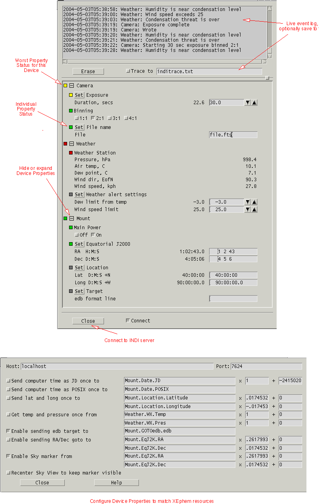

Control any INDI-compliant devices with XEphem. Get free INDI drivers online for
and many more devices from the indilib.org.
- Meade, Celestron and Takahasi telescopes,
- Apogee and Finger Lakes CCD cameras,
- Meade and JMI focusers
Also see the ASCOM/INDI gateway and Java implementations at Cloudmakers.
